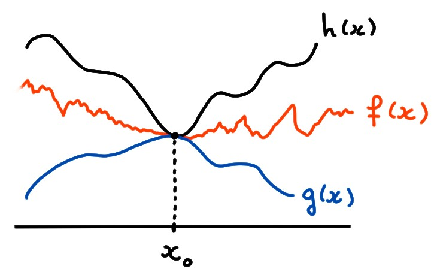

Le résultat suivant est l'analogue de celui vu précédemment
pour les suites; son but
est de calculer une limite \(x\to x_0\) (ou \(x\to x_0^\pm\))
en comparant \(f(x)\), proche de
\(x_0\), à deux fonctions plus simples dont on sait calculer la
limite. On formule le résultat pour la limite \(x\to x_0\), mais il peut aussi
se formuler pour les limites latérales (section suivante).
(Théorème des deux gendarmes)
Soient \(f,g,h\) définies dans un voisinage \(V\) épointé de
\(x_0\), telles que
\[g(x)\leqslant f(x)\leqslant h(x)\,,\quad \forall x\in V\,.\]
Si
\[\lim_{x\to x_0} g(x)=\lim_{x\to x_0} h(x)=L\,,\] alors la limite de \(f\)
lorsque \(x\) tend vers \(x_0\) existe, et vaut \(L\):
\[ \lim_{x\to x_0} f(x)=L\,.\]
Fixons \(\varepsilon\gt 0\).
Puisque
\(\lim_{x\to x_0} g(x)=\lim_{x\to x_0} h(x)=L\), il existe un \(\delta\gt 0\)
tel que
\(|g(x)-L|\leqslant \varepsilon\) et
\(|h(x)-L|\leqslant \varepsilon\) pour tout
\(0\lt |x-x_0|\leqslant \delta\).
Ceci implique que si \(0\lt |x-x_0|\leqslant \delta\), alors
\[
f(x)-L\leqslant h(x)-L\leqslant |h(x)-L|\leqslant\varepsilon\,,
\]
mais aussi
\[
f(x)-L\geqslant g(x)-L\geqslant -|g(x)-L|\geqslant-\varepsilon\,.
\]
Et donc \(|f(x)-L|\leqslant \varepsilon\).

Considérons la fonction
\[
f(x)=
4|x|\sin (\frac{100}{\sqrt{|x|}})\,,
\]
bien définie dans un voisinage épointé de \(x_0=0\).
Pour calculer sa limite lorsque \(x\to 0\), on peut remarquer que \(-1\leqslant
\sin(\cdots)\leqslant +1\), et donc pour tout \(x\neq 0\),
\[\underbrace{-4|x|}_{=g(x)}\leqslant f(x)\leqslant \underbrace{4|x|}_{=h(x)}\]
Comme \(\lim_{x\to 0 }g(x)=\lim_{x\to 0}h(x)=0\), le théorème des deux gendarmes
implique que \(\lim_{x\to 0}f(x)=0\).
Soient \(f,g,h\) trois fonctions définies au voisinage de \(x_0\).
Quelles affirmations sont toujours vraies?
[ ] Si
\(f(x)\leqslant g(x)\) et \(f(x)\leqslant h(x)\) pour tout \(x\) dans un voisinage épointé de \(x_0\),
et si
\(\lim_{x\to x_0}g(x)=\lim_{x\to x_0}h(x)=L\), alors
\(\lim_{x\to x_0}f(x)=L\).
[ ] Si \(f(x)\leqslant g(x)\leqslant h(x)\)
pour tout \(x\) dans un voisinage épointé de \(x_0\), et si
\(\lim_{x\to x_0}g(x)\) et \(\lim_{x\to x_0}h(x)\) existent, alors
\(\lim_{x\to x_0}f(x)\) existe.
[ ] Si \(g(x)\leqslant f(x)\leqslant h(x)\)
pour tout \(x>x_0\), et si
\(\lim_{x\to x_0^+}g(x)=\lim_{x\to x_0^+}h(x)=L\), alors
\(\lim_{x\to x_0^+}f(x)=L\).
[ ] Si \(f(x)\leqslant g(x)\leqslant h(x)\)
pour tout \(x\) dans un voisinage épointé de \(x_0\), si
\(\lim_{x\to x_0}h(x)=L\) et que \(\lim_{x\to x_0}g(x)\) n'existe pas, alors
\(\lim_{x\to x_0}f(x)\) n'existe pas.